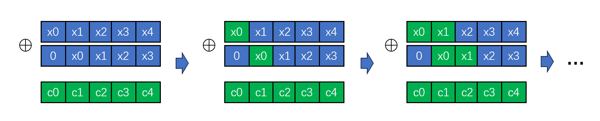

tcache poisoning
tache poisoning 暨 safe-linking 说明
介绍
一句话，就是把某个块的 next 指针给改了，然后 malloc 就能得到任意地址的数据。
本质上，double free 最终很多也是修改了 next 指针，所以 tcache poisoning 是一种更泛的术语。
counts 很重要
但是其实这里有细节：tcache 判断的时候是通过对应的 count 来判断的：
if (tc_idx < mp_.tcache_bins && tcache && tcache->counts[tc_idx] > 0)
{
victim = tcache_get (tc_idx);
return tag_new_usable (victim);
}
所以如果假设链表上只有一个 chunk，把它改成 next 并没有效果，因为第一次 malloc 之后 counts 已经是 0 了：
// 放入 tcache 中
vuln_chunk = malloc(0x20)
free(vuln_chunk)
// 修改 next 指针
vuln_chunk->next = target_addr
malloc(0x20) // 这次会得到 vuln_chunk，但是此时 counts 变为了 0
malloc(0x20) // 此时不会得到 target_addr，因为 counts 是 0，系统认为 tcache 上是空的
所以如果要攻击，通常是需要在 tcache 中放上两个才行，这样修改第一个的 next，然后再去两次 malloc 就可以了：
// 先放入一个到 tcache
a = malloc(0x20);
free(a);
// 放入 tcache 中
vuln_chunk = malloc(0x20)
free(vuln_chunk)
// 修改 next 指针
vuln_chunk->next = target_addr
malloc(0x20) // 这次会得到 vuln_chunk，此时 counts 变为了 1
malloc(0x20) // 此时会得到 target_addr
防御机制：safe-linking
glibc 2.32 增加了 safe-linking 这个操作，先介绍宏定义：
#define PROTECT_PTR(pos, ptr) \
((__typeof (ptr)) ((((size_t) pos) >> 12) ^ ((size_t) ptr)))
#define REVEAL_PTR(ptr) \
PROTECT_PTR (&ptr, ptr)
核心改动，每次在 free 之后，加入链表的 next 多做如下的操作：
e->next = PROTECT_PTR(&e->next, next);
// 等价于
e->next = next ^ (chunk_addr >> 12)
找链表下一个的操作变成了：
next = REVEAL_PTR(e->next);
// 等价于
next = PROTECT_PTR(&e->next, e->next) = ((&e->next >> 12) ^ e->next);
我知道现在会有很多疑问，别着急慢慢来。
正确时候的分析
假设没有恶意攻击。原来的 next，即下一个 chunk 的地址，我们叫做 real_next。当 free(e) 时：
// chunk_addr 是 e 自身的地址
e->next = (real_next) ^ (chunk_addr >> 12)
当 malloc 的时候，我们需要从 e 去寻找下一个，那么：
next = ((&e->next >> 12) ^ e->next)
= ((chunk_addr >> 12) ^ (real_next) ^ (chunk_addr >> 12))
= real_next
所以，正确的时候，可以找到下一个 chunk 的地址。
恶意时候的攻击
1. 原来的攻击方式，攻击把 e->next 指针改成了 fake_next，然后 malloc() 把 e 从链表取走，再来一次 malloc() 得到了 fake_next 指向的内容。
现在来看，则变成了，此时就不对了。
e->next = fake_addr ^ (chunk_addr >> 12);
2. 那么转换思路，攻击把 e->next 指针改成 fake_next ^ (chunk_addr >> 12)，这样不就可以了吗？
但是：攻击者很难知道 chunk_addr！ 这相当于攻击者需要知道 heap 的地址，如果开了 ASLR，那么攻击者是没办法知道准确地址的。
3. 那如果我知道 heap 地址再去做，是的，这样你就可以攻击了。但那就不是 safe-linking 所考虑的事情了，他这个防御的存在就是为了让攻击者不知道 heap 地址的时候可以防护。
至于为什么是右移 12 位，其实就是低 12 位在 ASLR 中表示的偏移量，这个是可以根据调试得到已知的。
其他说明
当时的疑问：加了 tcache_key 应该已经可以防止 safe-linking 预防的场景了吧？
简单回答：tcache_key 只能防止 double free，有的时候 tcache poisoning，即修改 next 指针不一定是通过 double free 来完成的。
decrypt safe-linking
在正常的时候，假设我们不知道堆地址，但是我们知道 next 指针，我们能否解出正确的指针？答案是肯定的。
回顾 safe-linking，可以看到，高 12 bit 是没有动的。并且基于一个事实：real_next 和 chunk_addr 在 12bit 往上的部分大概率一样。 之所以用 12 bit 就是这表示了一个页的大小，堆块一般都在一个页之间，所以他们除了低 12 bit 有所不同，剩下的是一样的。
// chunk_addr 是 e 自身的地址
e->next = (real_next) ^ (chunk_addr >> 12)
所以如下图所示，我们逐步的去求解即可。我们按照每 12 bit 划分，最后的 x5 其实是 4bit，这个暂且忽略，就假设地址是 60 bit 吧。x0-x4 是正确的地址，c0-c4 是密文，即 e->next。蓝色是未知、绿色是已知，我们逐步能推出来...
